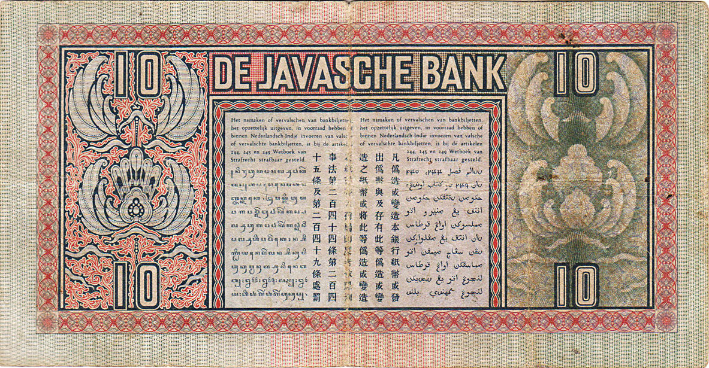
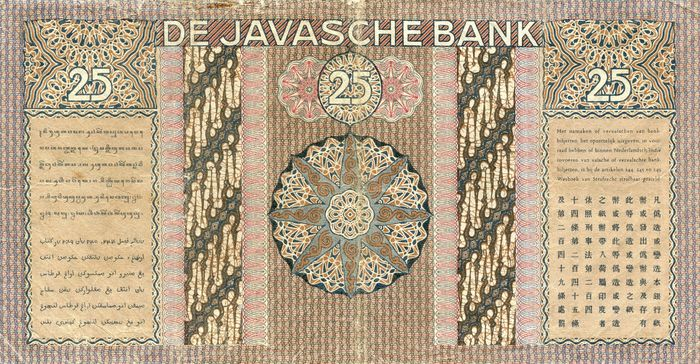

MOOI INDIE
Mooi Indie
Beautiful Indies
Characteristics of Mooi Indie
- Natural scenery, such as rivers, mountains, forests, rural atmosphere, beautiful rice fields in the Dutch East Indies.
- Describing women in the Dutch East Indies who were also exotic. Generally this Eastern woman is described as dancing or doing daily activities, or in a half dressed state.
- Indigenous men also often appear as objects of painting, usually as villagers, dancers or aristocrats.
- Use color choices that are shaded, bright, and peaceful.
[TITLE] Countryside [AUTHOR] Henry van Velthuysen | Dutch, 1881–1954 [YEAR] –– [MEDIUM] Oil on canvas [SIZE] 97 x 74 cm
[TITLE] De grote postweg bij Buitenzorg [AUTHOR] –– [YEAR] –– [MEDIUM] Oil painting [SIZE] 104 x 122 cm | 40.9 x 48.1 in
[TITLE] Portrait of a Balinese boy [AUTHOR] Hendrik Paulides | Dutch, 1892–1967 [YEAR] —— [MEDIUM] Watercolor [SIZE] 38 x 30 cm | 15 x 11.8 in
[TITLE] Portret van Soekardjo [AUTHOR] Hendrik Paulides | Dutch, 1892–1967 [YEAR] 1929 [MEDIUM] Oil paint [SIZE] 56.5 x 48 cm | 22.3 x 18.9 in
[TITLE] Wendingen: Maandblad Voor Bouwen en Sieren, VOL. 9, NO. 5, 1928 [AUTHOR] Johan ten Klooster | Dutch, 1873–1940 [YEAR] 1928 [MEDIUM] Journal [SIZE] 34 × 34 cm | 13.4 × 13.4 in
[TITLE] Koloniale Tentoonstelling Semarang 1914 [AUTHOR] Albert Hahn, Sr. | Dutch, 1877–1918 [YEAR] 1914 [MEDIUM] Ink on paper [SIZE] 109.2 x 81 cm | 43 x 31.9 in



[TITLE] An extensive Indonesian landscape with young cowherds [AUTHOR] Jan Daniël Beijnon | Dutch-Indonesian 1830—1877 [YEAR] 1874 [MEDIUM] Oil on canvas [SIZE] 57 x 45 cm | 22.4 x 17.7 in
.jpg){kind=link}
[TITLE] Bringing home the harvest [AUTHOR] Jan Daniël Beijnon | Dutch-Indonesian 1830—1877 [YEAR] 1874 [MEDIUM] Oil on canvas [SIZE] 56.5 x 44 cm | 22.22 x 17.3 in
.jpg){kind=link}
[ID] Mooi Indie Diserang Lalu Disayang
Darma Ismayanto
Takjub oleh keindahan alam Hindia Belanda, para perupa
Belanda melukiskannya di atas kanvas. Sejumlah perupa
sbumiputera juga menganut gaya romantisme ini antara
lain Abdullah Surio Subroto, Mas Pirngadi, Wakidi,
dan Basuki Abdullah.
Kritikan datang dari S. Sudjojono, yang menyebutnya sebagai
lukisan mooi indie. Lewat tulisan-tulisannya, Sudjojono
mengkritik lukisan mooi indie yang serbamolek melenakan
masyarakat bumiputera dari keadaan sesungguhnya: terjajah.
Dia menganggap lukisan mooi indie tak lebih hanya untuk
“menghibur” orang-orang asing.
“Benar mooi indie
[ENG] Mooi Indie: Hated Then Loved
Darma Ismayanto
Amazed by the natural beauty of the Dutch East Indies,
Dutch artists painted it on canvas. A number of native
artists also embraced this romantic style, including
Abdullah Surio Subroto, Mas Pirngadi, Wakidi, and Basuki
Abdullah.
Criticism came from S. Sudjojono, who called it an Mooi
Indie painting. Through his writings, Sudjojono criticized
the painting of the indolent Mooi Indie bumiputera society
from the real situation: colonized. He considers Mooi Indie
paintings no more than to "entertain" strangers.
"It is true Mooi Indie for the stranger, who has never seen
coconut trees and rice fields, it is true mooi indie for the tourist
bagi si asing, yang tak pernah melihat
pohon kelapa dan sawah, benar mooi indie bagi si turis
yang telah jemu melihat skyscapers mereka dan mencari
hawa dan pemandangan baru, makan angin katanya, untuk
menghembuskan isi pikiran mereka yang hanya bergambar
mata uang sahaja,” tulis Sudjojono dalam tulisannya di
Majalah Keboedajaan dan Masjarakat, Oktober 1939.
Bagi Sudjojono, kesenian –seni lukis khususnya– seharusnya
tidak terpisah dari realitas kehidupan masyarakat sekitarnya.
Semestinya, perupa “…menggambar juga pabrik-pabrik gula dan
si tani yang kurus, mobil si kaya dan pantalon si pemuda;
sepatu, celana dan baju garbadin pelancong di jalan aspal.
Inilah keadaan kita. Inilah realiteit kita,” tulis Sudjojono.
Sudjojono menyebutnya realisme.
who has been tired of seeing their skyscapers
and looking for new air and scenery, eating the wind, he said,
to blow away the minds of those who are only pictured in
currency. legitimate, "Sudjojono wrote in his article in
Keboedajaan and Masjarakat Magazine, October 1939.
For Sudjojono, art - especially in the art of painting -
should not be separated from the reality of the life of the
surrounding community. Supposedly, artists "... also draw
sugar factories and the thin peasant, the rich man's car
and the young man's pantalon; shoes, pants and garments of
travelers on the asphalt road. This is our condition. This
is our reality, "Sudjojono wrote. Sudjojono calls it realism.
As a form of resistance, Sudjojono founded the Indonesian
Image Experts Association (Persagi) in 1937. He held this
Sebagai bentuk perlawanan,
Sudjojono mendirikan Persatuan Ahli-Ahli Gambar Indonesia (Persagi) pada tahun 1937.
Dia tetap memegang pandangan realisme ini setelah Persagi
bubar serta kemudian terlibat dalam perkumpulan Seniman
Indonesia Muda dan Lembaga Kebudayaan Rakyat (Lekra).
Pada 1950-an, Sudjojono jadi anggota Parlemen dari Partai
Komunis Indonesia. Namun, dia kemudian dipecat karena
poligami yang tidak diperkenankan oleh partai. Menurut
Ajip Rosidi dalam Mengenang Hidup Orang Lain, setelah
mengucapkan selamat tinggal pada dunia politik, Sudjojo
rupanya meninggalkan pula realisme. Setidaknya, tidak lagi
menganggapnya sebagai satu-satunya aliran seni yang
dianutnya.
Menurut Onghokham, “Hindia yang Dibekukan: Mooi Indie
view of realism after Persagi broke up and later became
involved in the association of the Young Indonesian Artists
and the People's Cultural Institute (Lekra).
In the 1950s, Sudjojono became a member of Parliament from
the Indonesian Communist Party. However, he was later fired
for polygamy which was not permitted by the party. According
to Ajip Rosidi in Remembering the Life of Others, after
saying goodbye to the political world, Sudjojo also
apparently abandoned realism. At least, he no longer regards
him as the only school of art he adheres to.
According to Onghokham, "Frozen Indies: Mooi Indie in Fine
Arts and Social Sciences," in Kalam, 3rd edition, 2005,
Sudjojono finally also painted indie mooi because it
turned out that this school was very
dalam Seni Rupa dan Ilmu Sosial,”dalam Kalam, edisi 3, 2005,
Sudjojono akhirnya juga melukis mooi indie karena ternyata
mazhab ini sangat kuat berakar di masyarakat. Selain itu,
salah satu sebabnya adalah patron Sudjojono pada masa
pascakolonial, yakni Presiden Sukarno, adalah seorang
kolektor dan patron utama mazhab mooi indie.
“Sudjojono memang seniman unik,” kata kolektor seni Syakieb
Sungkar kepada Historia. “Di satu sisi dia pernah habis-
habisan menyerang mooi indie, tapi di akhir-akhir hidupnya
dia melukis dengan gaya tersebut. Ini menunjukkan, sehebat-
hebatnya dia, tetap manusia biasa. Bisa tidak konsisten juga.”
strongly rooted in
society. In addition, one of the reasons is that Sudjojono's
patron in the post-colonial era, President Sukarno, was a
collector and main patron of the indie school of thought.
"Sudjojono is indeed a unique artist," art collector Syakieb
Sungkar told Historia. "On the one hand he never completely
attacked mooi indie, but at the end of his life he painted
in that style. This shows, as great as he is, still human.
Can be inconsistent too. "
[TITLE] A Flood in Java [AUTHOR] Raden Saleh | Dutch East Indies, 1807–1880 [YEAR] 1865–1875 [MEDIUM] Lithograph [SIZE] 32 x 44 cm | 12.5 in × 17.3 in
[TITLE] Rumah Panggun [AUTHOR] Wakidi | Dutch East Indies, 1889–1979 [YEAR] –– [MEDIUM] watercolor on paper [SIZE] 20 x 12 cm | 7.9 x 4.7 in
[TITLE] The Arrest of Pangeran Diponegoro [AUTHOR] Raden Saleh | Dutch East Indies, 1807–1880 [YEAR] 1857 [MEDIUM] Oil on canvas [SIZE] >112 cm × 178 cm | 44 in × 70 in
[TITLE] Een Berg in de Preanger [AUTHOR] Abdullah Suriosubroto | Dutch East Indies, 1878–1941 [YEAR] ~1935 [MEDIUM] Wood, cotton, oil paint [SIZE] 62.5 x 95 cm | 24.6 in × 37.4 in
[TITLE] Waterverfschildering van een dorpstafereel [AUTHOR] Soewardja | Dutch East Indies, 1900–? [YEAR] –– [MEDIUM] Watercolor on paper [SIZE] 28.5 x 26.5 cm | 11.2 in × 10.4 in
{kind=link}
[TITLE] Untitled [AUTHOR] Soewardja | Dutch East Indies, 1900–? [YEAR] –– [MEDIUM] Watercolor on paper [SIZE] 26.7 x 24.1 cm | 10.5 in × 9.5 in
🡫 Print Version